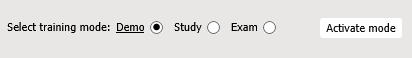
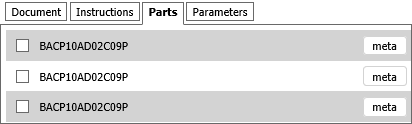

3D 培训应用程序 - 用户界面
此 3D 培训应用程序可用于学习培训流程。可以在三种不同的模式下使用培训应用程序：
- 演示模式 - 自动回放流程。可以按不同速度多次播放所需步骤，并从不同角度检查流程。
- 学习模式 - 交互式回放流程。可以在各种提示的帮助下执行流程。
- 考试模式 - 测试您的知识。执行此流程时没有任何提示的帮助。
培训环境
在下部窗格中，可以选择并激活相应的培训模式：

在演示和学习模式中，可以通过使用类似于 VCR 的控制面板来控制流程的回放：

- 播放步骤 - 开始（停止）流程的回放。
- 重置步骤 - 停止并后退当前步骤到开始位置。
- 上一步 - 转至回放的上一步。
- 下一步转至回放的下一步。
- 关闭模式 - 取消当前模式。
- 位置 - 允许您将摄像机移动到 3D 模型的合适区域。
操作窗格表示预期的操作或操作组。您应阅读指示并执行操作，如输入请求的参数或选择参与流程的对象：

上部窗格可帮助您完成以下流程：

- 文档.显示与当前活动流程步骤关联的文档部分。
- 说明。显示与当前培训步骤关联的注释。
- 零件。显示当前培训中交互式对象的列表。可用于查找对象的位置并显示其他元信息。
- 参数。显示当前培训中使用的参数列表。这些参数用作培训方案中的条件跳转。系统可以要求您输入这样的参数。
培训模式
演示模式
- 要进入此模式，选择演示模式，然后单击激活模式。
- 要开始回放，单击播放步骤。当前活动步骤的描述显示在文档选项卡式页面上。
- 流程将连续显示。
- 要暂时停止播放，单击暂停。单击播放继续回放。
- 要显示整个流程的描述，单击文档。
- 可以在 3D 窗口中导览（请参见该文档的在 3D 窗口中导览章节）。
- 通过零件选项卡式页，可以在 3D 窗口中高亮显示所需的零件（单击定位）并显示其他信息（单击元）。
- 要移至流程的下一步或上一步，单击下一步或上一步。
- 要退出演示模式，单击关闭模式。
学习模式
- 要进入此模式，选择学习模式，然后单击激活模式。
- 单击播放步骤开始学习流程。应按照操作窗格中显示的指示操作。指示分为以下三组：
- 定位当前过程步骤中涉及的那些零件，然后在 3D 窗口中或在零件选项卡式页上单击它们。
- 从选择列表中选择正确的答案。
- 指定参数的值：
- 使用跳过按钮，可以移动到培训方案中的下一个操作。
- 测试结果直观地指明了所犯的错误（绿色 - 正确、红色 - 错误）。错误级别在 3D 仿真中指定，并在当前步骤中逐渐提高。每个新步骤都从零错误级别开始。
- 完成所有步骤，并在准备退出学习模式时单击关闭模式。
考试模式
- 要进入此模式，选择考试模式，然后单击激活模式。
- 单击开始进行测试。在此处，您应按照与学习模式相同的方式执行操作，但提示不再可用。
- 要退出考试模式，单击关闭模式。
在 3D 窗口中导览
可以通过使用鼠标或导览条 在 3D 窗口中导览：

放大/缩小 3D 模型：
- 使用鼠标滚轮；
- 或者单击“导览”条上的“缩放”
 ，将指针定位在 3D 窗口中的任意位置，按鼠标左键，然后按住鼠标左键并移动。
，将指针定位在 3D 窗口中的任意位置，按鼠标左键，然后按住鼠标左键并移动。
上/下或左/右移动摄像机
- 将指针定位在 3D 窗口中的任意位置，然后在按住鼠标中键（或鼠标滚轮）的同时移动鼠标。
- 或者单击“导览”条上的“平移”
 ，将指针定位在 3D 上方，然后按住鼠标左键并移动。
，将指针定位在 3D 上方，然后按住鼠标左键并移动。
使 3D 模型在 3D 窗口中完全可见：
- 单击“导览”条上的“适合”
 。
。
旋转 3D 模型：
- 单击“导览”条上的“旋转”
 ，将指针定位在 3D 模型上方，然后按住鼠标左键并移动。
，将指针定位在 3D 模型上方，然后按住鼠标左键并移动。
指定 3D 中的旋转中心：
- 按 ALT 键，然后单击 3D 窗口中的任何几何体。
- 或将指针定位在 3D 窗口中的任何几何体上方，然后单击鼠标中键（或鼠标滚轮）。
转至下一个流程步骤（动画）：
- 单击“跳过当前动画”
 。
。
设置
- 速度。设置 3D 流程的回放速度。
- 冻结视点。如果选中，则在回放期间使用当前查看器位置。
- 禁用警报消息。如果选中，则禁止警报消息输出。
- 在演示和研究模式下启用零件的特别高亮显示。如果选中（默认值），则在 3D 对象中选择的项上方将出现半透明闪烁球体，以吸引学员注意。
- 在演示模式下回放。如果选中（默认值），可在培训流程中不间断回放。如果清除此选项，则会在每个步骤后停止回放。
- 在研究模式下启用直接提示.在“操作”窗格中显示或隐藏有关应执行的学员动作信息。通过启用直接提示，可使用“定位零件”按钮来定位零件（它具有所需零件的名称）。此外，当启用直接提示后，“选择”列表中将显示正确的答案。
- 显示导览立方体。 显示或隐藏 3D 窗口中的导览立方体。导览立方体有三种不同类型的热点区域：边、拐角和面。当您将指针置于导览立方体的边、拐角或面上时，相应的区域将高亮显示。通过这些区域，可以在标准视图之间切换，也可进行旋转。
- 显示曲面边。如果选中，可在 3D 窗口中显示曲面边界。
- 反锯齿.激活用于最小化 3D 窗口中变形构件的技术。
- 环境遮蔽。激活 3D 窗口中的周围介质遮挡着色和渲染技术。
- 描画光标悬停对象。所选内容带轮廓显示。